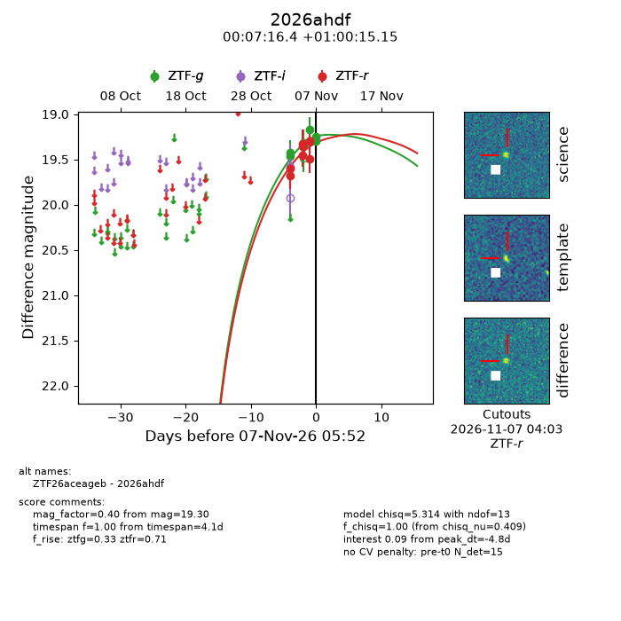
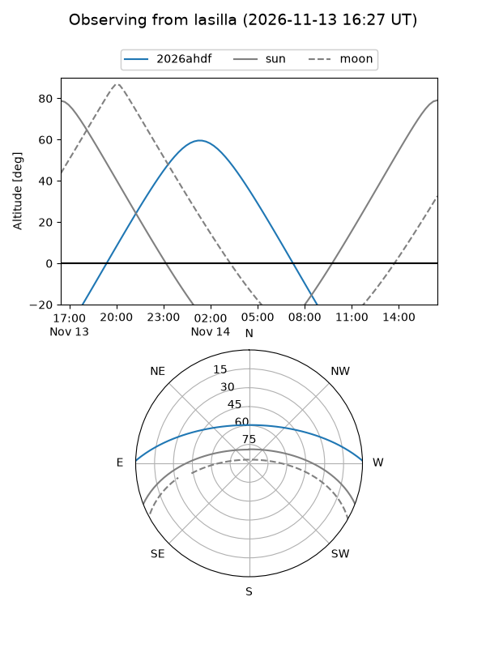
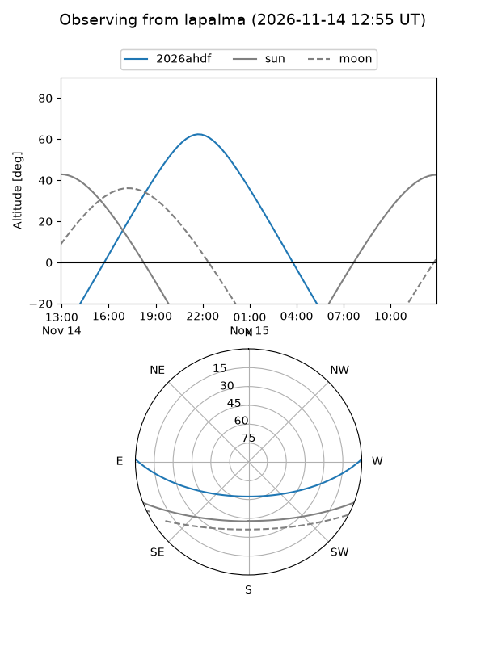
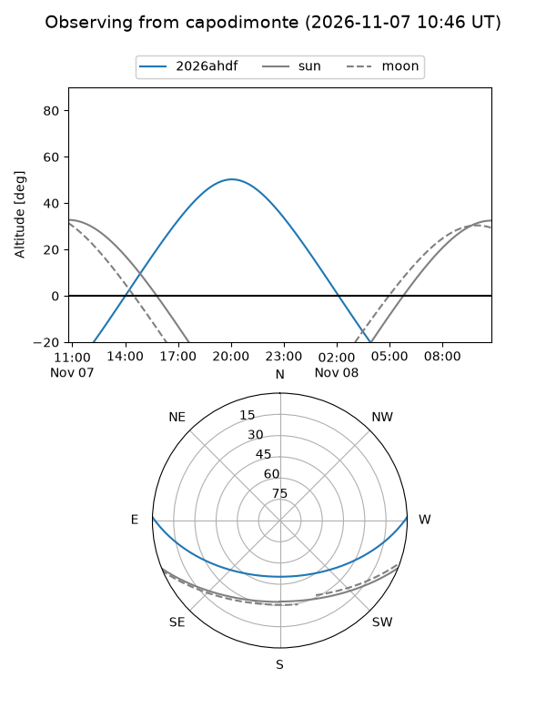
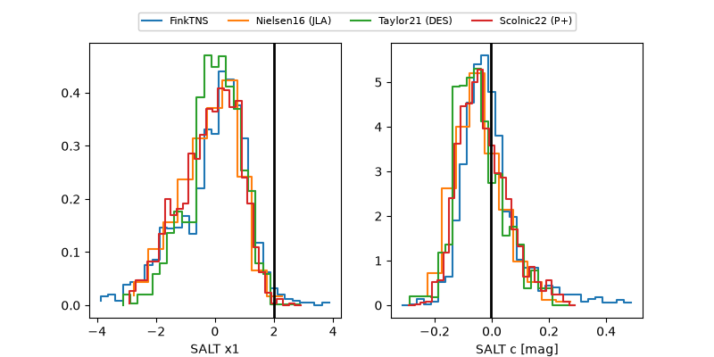

2026ahdf
Target 2026ahdf at 2026-11-07 05:54
Aliases and brokers:
FINK-ZTF: ztf.fink-portal.org/ZTF26aceageb
Lasair-ZTF: lasair-ztf.lsst.ac.uk/objects/ZTF26aceageb
ALeRCE-ZTF: alerce.online/object/ZTF26aceageb
YSE-PZ: ziggy.ucolick.org/yse/transient_detail/2026ahdf
TNS name: wis-tns.org/object/2026ahdf
Direct TNS query: direct search
alt names
ZTF26aceageb (ztf,fink_ztf)
2026ahdf (tns,yse)
Coordinates:
equatorial (ra, dec) = 1.8184,+1.00421
equatorial (HMS+DMS) = 00:07:16.42,+01:00:15.15
galactic (l, b) = (100.4666,-59.92714)
Flags:
peak dt: -4.8
Photometry:
last ztfg=19.30, ztfr=19.49
7 ztfg, 8 ztfr detections
Lightcurve

Visibility



Additional plots
